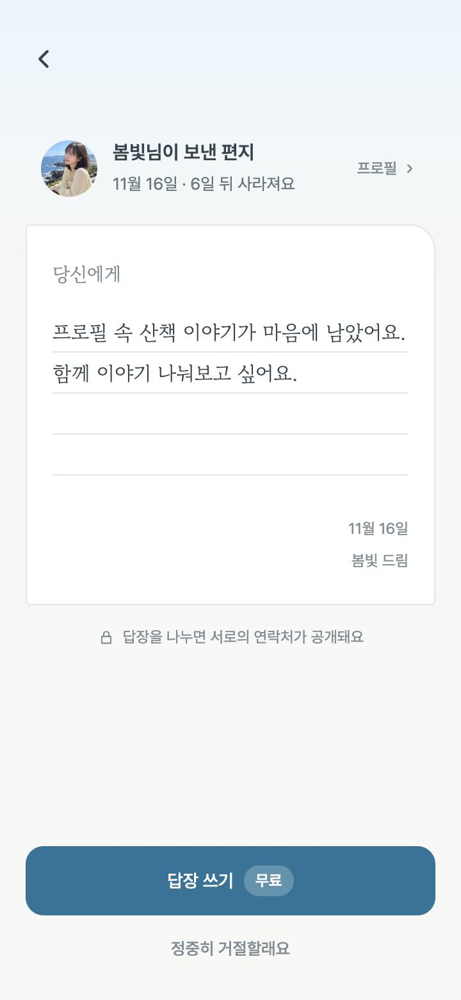
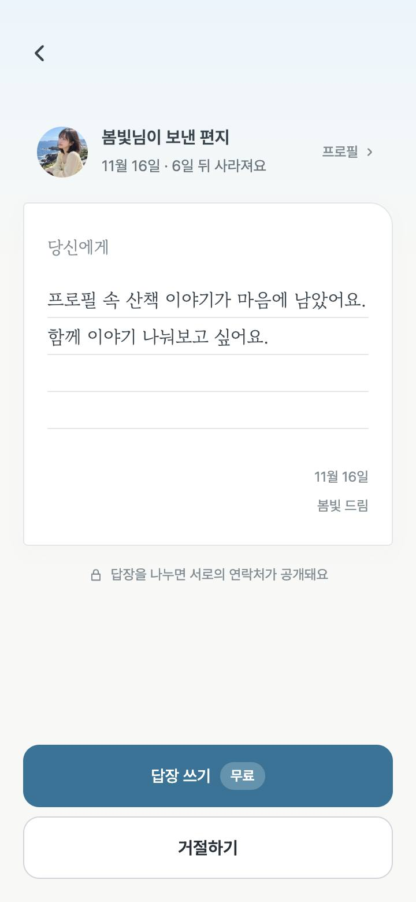
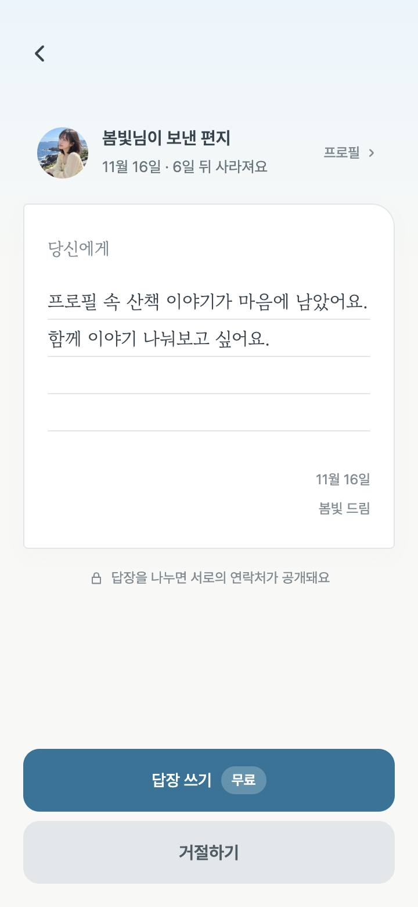
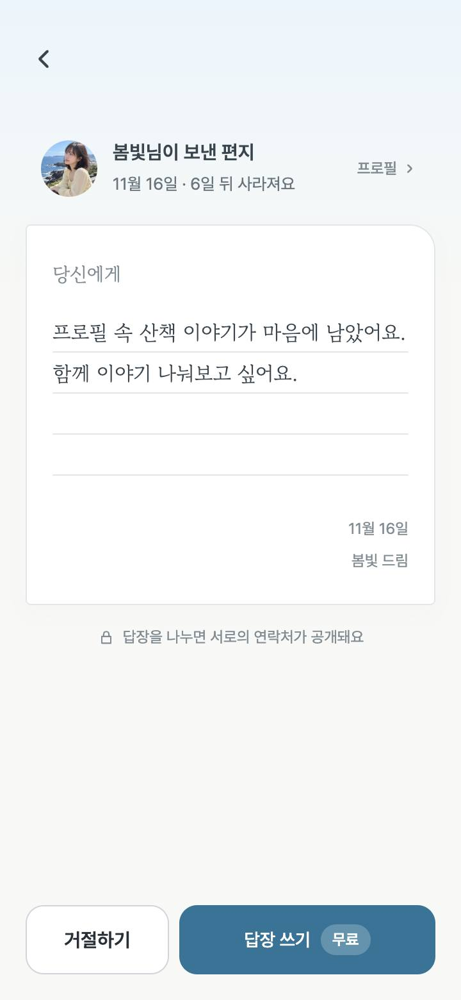

받은 편지 · 거절 버튼
- 받은 피드백: "정중히 거절할래요" 글자 대신, 아래에 막대 모양 "거절하기" 버튼을 하나 더 두면 좋겠어요.
- 세 안 모두: "답장 쓰기"와 같은 높이 · 모서리. 누르면 지금처럼 거절 확인 시트가 먼저 떠요(바로 거절되지 않아요).

지금"답장 쓰기" 아래 13 회색 글자 "정중히 거절할래요"

A아래 흰 버튼 · Tertiary(흰 바탕 + 회색 선 + 진한 글자). 시트의 "취소"와 같은 모양

B아래 회색 버튼 · cool-neutral-100 바탕 + 700 글자. 답장 쓰기보다 한 단계 약하게

C나란히 · 왼쪽 거절하기(흰 버튼, 112) · 오른쪽 답장 쓰기. 확인 창과 같은 배치, 화면 아래 높이를 덜 차지해요